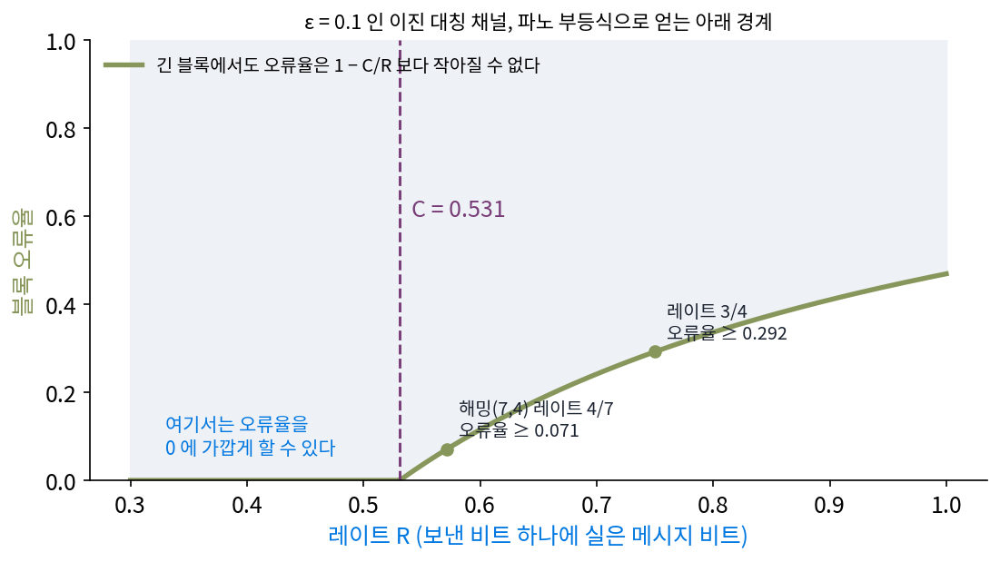
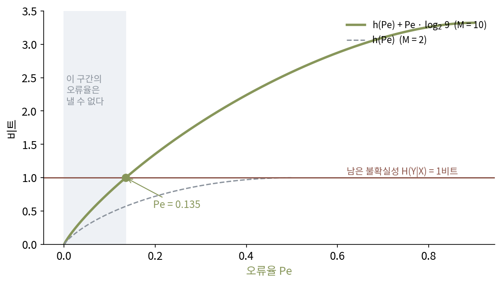
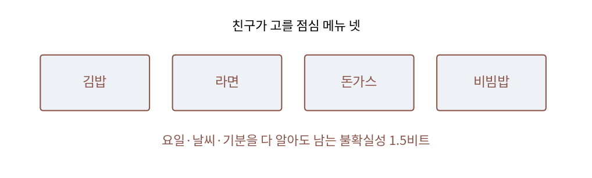
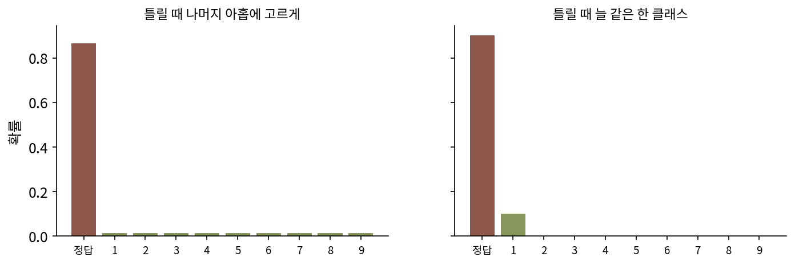

파노 부등식: 남은 불확실성이 오류율의 하한을 정한다
채널 코딩 정리의 뒷부분은 레이트가 용량보다 크면 어떤 코드도 오류율을 0으로 보내지 못한다고 했고, 무작위 코드 실험에서 레이트 3/4의 오류율이 블록 길이와 함께 올라간 것도 그 모습이었다. 그런데 「0으로 가지 않는다」는 말만으로는 오류율이 0.001인지 0.3인지 알 수 없어 설계에 쓰기 어렵다. 오류율이 적어도 얼마인지 숫자로 말할 수는 없을까? 같은 물음은 분류기에도 있어서, 사진을 다 보고도 라벨이 하나로 정해지지 않는 자료에서는 어떤 분류기도 넘을 수 없는 정확도가 얼마인지 묻게 된다.
역사: 모호함을 오류율로 옮기기
섀넌의 1948년 논문은 채널 코딩 정리의 뒷부분을 오류율이 아니라 모호함으로 적었다. 정리 11은 원천의 엔트로피 H가 용량 C보다 크면 「모호함을 H − C보다 작게 하는 코딩 방법은 없다」고 말한다. 받은 신호를 보고도 보낸 메시지에 대해 H − C비트쯤의 불확실성이 남는다는 뜻이다. 통신 기사가 알고 싶은 것은 「메시지가 몇 번에 한 번 틀리나」인데, 남은 불확실성이 크다는 것이 곧 자주 틀린다는 뜻인지는 따로 보여야 했다. 불확실성은 많이 남아도 대부분 맞히고 가끔 크게 틀리는 경우는 없을까?
이 다리를 놓은 사람은 MIT의 파노(Robert Fano)다. 파노는 섀넌과 함께 정보 이론의 초기를 이끈 사람으로, 1950년대 초 MIT에서 정보 이론 대학원 세미나와 강의를 맡았다. 오류율과 남은 불확실성을 잇는 부등식은 그 강의에서 나왔다고 알려져 있다. 여러 문헌이 1952년 MIT 강의 「정보의 전송(Transmission of Information)」의 강의 노트를 출처로 들고, 그는 1961년 같은 이름의 교과서에 이를 실었다.

오늘날 교과서는 채널 코딩 정리의 뒷부분을 파노 부등식으로 증명한다. 레이트 R이 용량 C보다 크면 블록 오류율이 블록 길이 n에 상관없이 대략 1 − C/R 아래로 내려가지 못한다는 결론이 이 부등식에서 나온다. 해밍(7,4) 코드를 ε = 0.1인 채널에 쓰면, 같은 레이트 4/7의 어떤 긴 코드도 블록 오류율을 0.071 아래로 내리지 못한다.

「불확실성이 남는다」에서 「자주 틀린다」로 넘어가는 건 당연해 보이는데요. 따로 증명이 필요했어요?

메시지가 100만 가지인데 남은 불확실성이 1비트라고 해 봐요. 그 1비트가 「늘 두 후보 가운데 하나」일 수도 있고, 「대부분은 확실한데 가끔 수천 후보로 분산됨」일 수도 있어요. 두 경우의 오류율이 같을까요?
아니요. 늘 두 후보 사이면 반은 틀리고, 가끔만 분산되면 거의 안 틀릴 수도 있겠네요. 불확실성 1비트가 오류율 하나로 정해지지는 않아요.
그래서 섀넌의 모호함만으로는 「적어도 몇 % 틀린다」를 말할 수 없었어요. 파노는 후보의 수까지 넣어 그 경계를 적었고요.

그럼 후보 수가 많을수록 같은 불확실성에서 오류율의 하한은 낮아지겠네요. 후보가 둘뿐일 때와 열 개일 때를 비교해 보고 싶어요.
10 클래스, 남은 1비트
열 가지 클래스 가운데 하나를 선택하는 분류 문제에서, 입력 X를 다 보고도 라벨 Y에 대해 1비트의 불확실성이 남는다고 하자. 분류기가 내는 답은 입력만 보고 정하므로, 분류기의 답을 안다고 남은 불확실성이 줄지는 않는다. 그렇다면 라벨을 적어 보내는 비트를 분류기의 답을 이용해 세어 볼 수 있다.
받는 사람이 같은 입력과 같은 분류기를 가지고 있다고 하자. 먼저 「분류기의 답이 맞았나」를 적는데, 틀릴 확률이 Pe이면 평균 h(Pe)비트로 적을 수 있다. 맞았으면 그것으로 끝이고, 틀렸으면 나머지 아홉 클래스 가운데 어느 것인지를 많아야 log₂ 9 = 3.17비트로 적는다. 이렇게 하면 라벨을 평균 h(Pe) + Pe × 3.17비트 안에 적을 수 있는데, 입력을 알고도 남은 불확실성 1비트보다 짧게 적는 방법은 없으므로 h(Pe) + Pe × 3.17이 1비트 이상이어야 한다.
이렇게 얻은, 남은 불확실성과 오류율 사이의 부등식을 파노 부등식 (남은 불확실성이 오류율의 하한을 정한다는 부등식, Fano’s inequality)이라 한다.
왼쪽은 Pe가 0에서 (M − 1)/M까지 커지는 동안 계속 늘어나므로, 왼쪽이 1비트에 닿는 Pe가 오류율의 하한이다. Pe = 0.1이면 왼쪽이 0.469 + 0.317 = 0.786비트로 아직 1비트에 모자라고, 이분법으로 풀면 Pe = 0.135에서 0.572 + 0.428 = 1.000비트가 된다. 어떤 분류기도 이 자료에서 13.5%보다 덜 틀릴 수 없고, 정확도는 86.5%를 넘지 못한다.

남은 불확실성을 바꾸면 하한도 움직인다. 10 클래스에서 0.1비트면 오류율 0.9% 이상, 0.5비트면 5.8% 이상, 2비트면 33.9% 이상이다. 남은 불확실성이 log₂ 10 = 3.32비트, 곧 입력이 라벨에 대해 아무것도 알려 주지 않으면 하한은 90%로 찍기와 같아진다. 두 클래스에서 남은 불확실성이 h(0.1) = 0.469비트면 하한은 0.1이다.
채널 코딩에서 쓸 때는 메시지 2^(nR)가지가 클래스이고, 받은 블록이 입력이다. 받은 블록이 메시지에 대해 알려 주는 정보는 많아야 nC비트라, 받은 블록을 보고도 남는 불확실성이 적어도 nR − nC비트이니, 파노 부등식에 넣고 정리하면 블록 오류율이 1 − C/R − 1/(nR) 이상이라는 경계가 나온다. 위 역사 그림의 곡선이 그 경계의 긴 블록 극한이다.
ML에서: 라벨이 불일치하는 자료의 정확도 상한
벤치마크의 정확도가 99%에 가까워지면, 남은 1%가 모델의 실수인지, 사진만 보고는 라벨이 정해지지 않는 경우인지가 궁금해진다. 같은 사진에 검수자들이 서로 다른 라벨을 붙이는 비율을 측정하면 입력을 보고도 남는 라벨의 불확실성을 추정할 수 있고, 파노 부등식이 그 불확실성에서 정확도의 상한을 준다. 시험 라벨 자체에 노이즈가 있으면, 상한보다 높은 점수는 모델이 그림을 잘 보았다기보다 시험 라벨을 붙인 검수자 한 명의 선택까지 맞혔다는 신호일 수 있다. 실제 숫자로는 문제 12에서 해 본다.
다만 파노 부등식이 쓰는 것은 참 분포의 H(Y∣X)다. 모델의 크로스 엔트로피 손실은 그것보다 늘 크거나 같으므로, 손실 값을 그대로 넣으면 하한이 아니라 하한보다 큰 값을 얻게 된다. 손실로 측정할 수 있는 것은 남은 불확실성의 위쪽 경계뿐이다.
문제 10. 점심 메뉴 맞히기
친구가 날마다 학식 메뉴 넷(김밥, 라면, 돈가스, 비빔밥) 가운데 하나를 선택한다. 요일, 날씨, 친구의 기분을 다 알아도 메뉴에 대해 1.5비트의 불확실성이 남는다. (가) 아무리 영리하게 맞혀도 틀리는 비율은 적어도 얼마인가? (나) 친구를 더 잘 알게 되어 남은 불확실성이 1비트로 줄면 하한은 얼마인가? (다) 하한이 「맞힐 수 있다」는 보증이 되는가?

M = 4니까 h(Pe) + Pe × log₂ 3 ≥ 1.5를 풀면 돼요. log₂ 3 = 1.585이고요. Pe = 0.3이면 0.881 + 0.476 = 1.357로 모자라고, 0.4면 0.971 + 0.634 = 1.605로 넘어요. 스크립트로 이분법을 돌리면 0.354예요. 열 번에 세 번 반은 틀려요.
(나)는요?
1비트면 0.189요. 불확실성이 3분의 1 줄었는데 하한은 절반 가까이 줄었네요.

(다)는 아닐 것 같아요. 하한은 「이보다 덜 틀릴 수는 없다」만 말하니까요. 1.5비트가 남는 친구라도 맞히는 사람이 요일만 보고 찍으면 훨씬 더 틀릴 수 있고요.
그럼 하한에 닿는 사람은 어떤 사람일까요?
틀릴 때 나머지 셋을 균일하게 틀리는 사람이요? 틀린 경우에 「어느 것인지」 적는 비트를 log₂ 3만큼 꽉 채워 써야 등호가 되니까요. 「균일하게 틀리면 등호」가 맞는지는 다음 문제에서 확인하고 싶어요.

동아리 신입 부원 이름 맞히기 같네요. 얼굴을 봐도 두세 명이 헷갈리면 아무리 기억력이 좋아도 몇 번은 틀리고요.
문제 11. 하한에 딱 닿는 분류기
10 클래스 분류기 둘이 있다. 분류기 A는 13.52%의 경우에 틀리고, 틀릴 때는 정답이 나머지 아홉 클래스 가운데 균일하게 하나다. 분류기 B는 10%의 경우에 틀리고, 틀릴 때는 정답이 늘 같은 한 클래스다(예: 「고양이」라고 답하고 틀리면 정답은 늘 「개」). 각 경우에 분류기의 답을 알 때 남는 정답의 불확실성을 계산하고, 파노 부등식의 하한과 실제 오류율을 비교하라.

A부터요. 정답 확률이 0.8648 하나와 0.1352 ÷ 9 = 0.0150 아홉 개예요. 엔트로피를 계산하면… 스크립트로 1.000비트가 나와요. 파노 하한을 1비트로 풀면 0.135였으니까, A는 하한에 그대로 닿아요.
B는요?
B는 0.9와 0.1 두 개만 있으니까 h(0.1) = 0.469비트예요. 이 값으로 파노 하한을 풀면… 10 클래스라 log₂ 9를 넣어야 하니까 0.053이 나와요. 실제 오류율은 0.1이고요.

하한이 0.053인데 실제로는 0.1이면, 하한이 엉터리 아니에요? 거의 두 배 차이인데요.
B는 틀릴 때 어디로 틀리는지가 정해져 있죠. 파노 부등식은 틀렸을 때 「아홉 가운데 어느 것」을 적는 데 log₂ 9비트를 쓴다고 셌어요. B는 실제로 몇 비트가 들까요?

0비트요. 틀렸다는 것만 알면 정답이 「개」로 정해지니까요. 파노 부등식이 쓸 수도 있는 비트를 넉넉하게 잡은 만큼 하한이 낮아진 거네요. 엉터리가 아니라 느슨한 거고요.

그럼 B는 사실상 두 클래스 문제네요. M = 2로 하면 h(Pe) ≥ 0.469에서 Pe ≥ 0.1이라 하한이 실제 오류율과 같아져요. 틀리는 방향이 집중되어 있으면 클래스 수를 줄여서 봐야 하한이 정확해지는 거고요.
문제 12. 검수자가 불일치하는 사진
10 클래스 사진 분류 자료에서, 같은 사진에 여러 검수자가 붙인 라벨을 모아 보니 사진을 보고도 남는 라벨의 불확실성이 평균 H(Y∣X) = 0.3비트였다. 시험 라벨도 이런 검수자 한 명이 붙였다. (가) 어떤 분류기도 넘을 수 없는 시험 정확도는? (나) 어떤 논문이 이 자료에서 정확도 99%를 보고했다면 무엇을 의심해 보겠는가? (다) 클래스를 1000개로 늘린 자료에서 남은 불확실성이 같은 0.3비트라면 상한은 어떻게 바뀌는가?
h(Pe) + Pe × log₂ 9 ≥ 0.3을 풀면 돼요. Pe = 0.03이면 0.194 + 0.095 = 0.289로 조금 모자라서, 이분법으로 조금 올리면 Pe ≥ 0.031이에요. 정확도 상한은 96.9%고요.
그럼 99%라는 보고는요?
상한보다 2%포인트 높으니까 불가능한 숫자예요. 논문이 계산을 잘못했겠죠.
잠깐, 실제로 학습을 돌려서 나온 숫자면 계산 실수는 아닐 것 같은데. 파노 부등식은 분류기가 사진만 보고 답한다고 했지? 시험 사진이 학습 자료에 섞여 있으면 그 검수자가 붙인 라벨까지 외울 수 있잖아.
그러면 파노 부등식의 어느 가정이 깨지죠?
분류기가 입력만 본다는 가정이요. 라벨을 외웠으면 사진 말고 라벨 자체를 본 거나 마찬가지예요. 불가능하다고 할 게 아니라 시험 자료가 새어 들어갔는지부터 봐야 했네요.
아니면 시험 라벨만 여러 명의 다수결로 다시 붙였을 수도 있어요. 그러면 시험 라벨의 남은 불확실성이 0.3보다 작아져서 상한이 올라가고요.
둘 다 실제로 점검하는 항목이에요. (다)는요?
음, 1000 클래스면 log₂ 999 = 9.96이니까 틀렸을 때 적는 비트가 커져요. 같은 0.3비트에서 하한을 풀면 0.017로 내려가고, 정확도 상한이 98.3%로 올라가요. 클래스가 많으면 틀린 경우를 적는 데 비트가 많이 드니까, 같은 불확실성이라도 덜 틀리는 경우까지 허락되는 거네요.